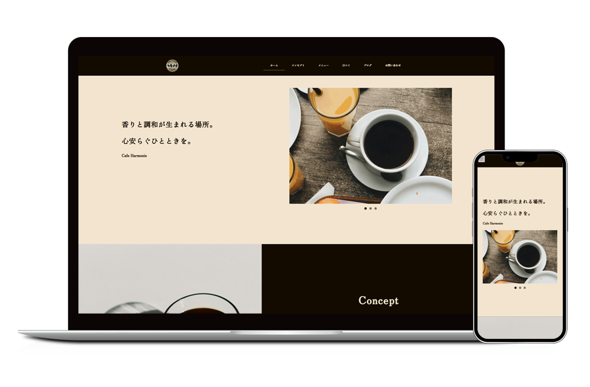

Cafe Harmonie
オリジナルWEBサイト
Schedule
2025.9.21 - 2025.9.24
Role
デザイン制作、実装
Client
Cafe Harmonieオーナー 山口 修司様（架空）

01Design Concept
「オーナーが自ら厳選した豆で淹れるこだわりのコーヒーで人と人を繋ぐ」をコンセプトに設定し、コーヒーのこだわりとともに人の交流を生む場であることを伝えられるようなデザインやコンテンツをつくりました。
Purpose
店舗紹介・ブログ発信・集客
Target
20~40代のカフェやコーヒーを好む男性/女性
Font
日本語: Zen Old Mincho
英語: PT Serif
レトロで落ち着きのあるフォントでサイトに温かみや重厚感を与えました。
Color
ベージュをベースカラーに、こげ茶をメインカラーに、オレンジをアクセントカラーに使用し、コーヒーの深みや安心感を感じられる配色にしました。
02Technical Details
WordPressの「Lightning」テーマを使用し、追加CSSを記述しデザインを編集しました。また、WordPressのブログ機能を活用し、ブログを簡単に更新できます。さらに、WordPressのプラグイン機能を活用し、スライドショーやフェードイン効果をつけてユーザーの目を引くようにしました。
Design Tools
Figma, Photoshop
Development
WordPress「Lightning」テーマ